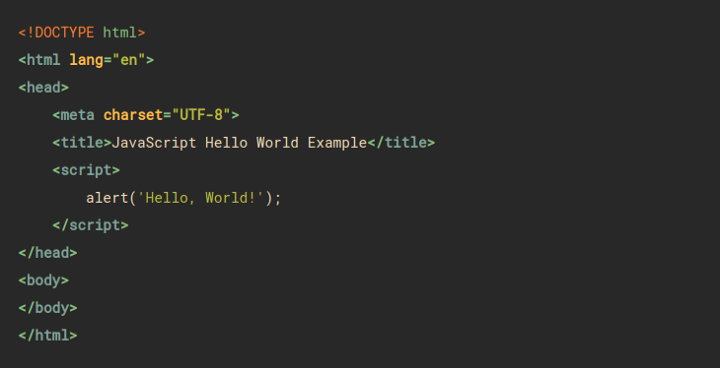

Tudo sobre JavaScript
Conceitos / Fundamentos
- Variáveis: Na programação, uma variável é um nome pelo qual podemos nos referir a um espaço na memória do computador. Em JavaScript não é necessário especificar o tipo de dados que a variável conterá e uma variável pode conter qualquer tipo de dados em um determinado momento. Abaixo você encontra várias maneiras de declarar variáveis.
- Condicionais: Uma condicional é uma instrução de programação que permite executar um ou outro código dependendo se o resultado de uma operação é falso ou verdadeiro. Em JavaScript, temos comparações de igualdade, maior que e menor que e operadores lógicos como and e or. Veja o exemplo
- Ciclos: É muito comum ter que aplicar os mesmos processos a uma grande quantidade de dados. Para isso utilizamos os ciclos que nos permitem repetir a execução de um mesmo código. Aqui estão dois exemplos, o ciclo for e o ciclo while.
- Funções: O objetivo das funções na programação é agrupar os códigos que são usados com muita frequência. Em JavaScript, as funções também podem se comportar como variáveis e esta é uma das suas características mais importantes. Veja os comentários no exemplo a seguir.
- Objetos: A programação que é orientada por objetos nos permite criar um programa de computador como um conjunto de coisas que fazem algo. Na prática, um objeto se assemelha a uma estrutura de dados que também possui funções que operam em seus próprios dados. Como o JavaScript é uma linguagem de programação orientada por objetos, podemos ver várias operações com objetos no exemplo abaixo.
- Eventos: A programação que é orientada por eventos nos permite escrever programas que não são executados de forma linear, mas que executam uma parte do código como resposta a um evento. Um evento pode ser algo que ocorre por exemplo, quando clicamos com o mouse ou quando acorre a abertura de uma rede de conexão. O JavaScript é uma linguagem voltada para eventos, onde podemos conectar funções com eventos, para desta forma interagir com o usuário. No exemplo abaixo conectamos um mouse com uma função anônima.
- JavaScript no Navegador: Os navegadores oferecem um ambiente de execução de JavaScript onde podemos manipular o documento html e executar algumas operações de rede. As possibilidades que temos são determinadas pela DOM API (Document Object Model - Application Program Interface) que é simplesmente uma lista de objetos e métodos disponíveis para isso. Existem muitas operações que podemos fazer em um documento html, a seguir mostraremos algumas.
Código base exemplo em JavaScript

Onde é utilizado o JavaScript
- O JavaScript (JS) é uma linguagem de programação utilizada principalmente em páginas web. Com o JS, você pode mostrar mensagens e outras informações interessantes, fazer verificações ou mudar dinamicamente a apresentação visual das páginas, conforme o comportamento que você deseja que sua página (ou aplicação) possua.
Voltar